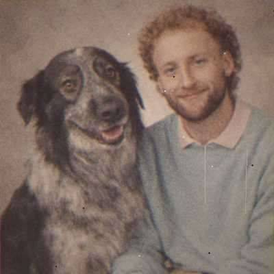

gelijkwaardigheid
Echte begeleiding begint bij het erkennen van de ander als evenwaardig mens, ongeacht diagnose, achtergrond of identiteit.
orthopedagogisch begeleider
Zorg die vertrekt vanuit verbinding. Met ervaring in residentiële zorg, mobiele begeleiding en psychiatrie.
Ik ben Kobe. Een warme, reflectieve mens met een bewogen achtergrond en een duidelijke drive om verder te groeien.
Wat begon als overleven, is geëvolueerd tot een bewuste keuze om betekenisvol werk te doen. De residentiële zorg voelt als thuis: een plek waar ik mijn eigen ervaring kan omzetten in écht contact.
Ik rondde mijn graduaat Orthopedagogische Begeleiding af aan UCLL, met grote onderscheiding. In september 2026 startte ik de bachelor.

leeftijd 26 · geboortejaar 2000
3 stages voltooid · 2024 – 2026
“Iedereen verdient begeleiding die vertrekt vanuit respect. Zonder oordeel, met begrip en op eigen tempo.”
Echte begeleiding begint bij het erkennen van de ander als evenwaardig mens, ongeacht diagnose, achtergrond of identiteit.
Ik vertrek vanuit de mens en niet vanuit het probleem. Met focus op kracht, veerkracht en het creëren van ruimte voor groei.
Voor mij is LGBTQ+-vriendelijke en gendersensitieve begeleiding gewoon een basisvoorwaarde voor veilige zorg.
Vaardigheden die ik in de praktijk heb opgebouwd, van de leefgroep tot het mobiele team.
Helder communiceren, actief luisteren en verbinding maken, ook wanneer het moeilijk wordt.
Achter gedrag kijken, patronen herkennen en onderbouwd rapporteren vanuit een orthopedagogisch kader.
De balans vinden tussen warme betrokkenheid en professionele afstand, afgestemd op de noden van de cliënt.
Kalm blijven en adequaat handelen in moeilijke situaties.
Gendersensitief en LGBTQ+-vriendelijk werken als onderdeel van een open, respectvolle begeleidingsstijl.
Webontwikkeling, digitale tools bouwen en creatief inzetten van technologie in de zorg.
benieuwd waar ik dit leerde? bekijk mijn traject
Van leefgroep over psychiatrie tot mobiele begeleiding: elke stage bracht me een stap dichter bij de begeleider die ik wil zijn.
700 / 700 uur praktijk
okt 2024 –
jan 2025
beroepspraktijk 1
Leefgroep voor personen met een verstandelijke beperking
Mijn eerste kennismaking met het werkveld. Ik leerde de basishouding van een begeleider: nabijheid, geduld, en het belang van structuur. Een waardevolle ervaring, maar ik merkte dat ik meer uitdaging zocht.
apr 2025 –
jun 2025
beroepspraktijk 2 keerpunt
Observatie- en behandelunit in een psychiatrisch ziekenhuis
De stage die alles veranderde. Hier ontdekte ik mijn passie voor complexe begeleidingsvragen: de nuance, het échte contact, de uitdaging om achter het gedrag te kijken. Ik leerde omgaan met crisisinterventie en de balans tussen nabijheid en professionele afstand.
2025 – 2026
beroepspraktijk 3
Mobiel team Dienst Inclusieve Ondersteuning (DIO)
Begeleiding van cliënten met een licht verstandelijke beperking en/of een psychische kwetsbaarheid die zelfstandig wonen en bij kleinschalige woonprojecten. Hier leerde ik werken vanuit autonomie en vertrouwen: ondersteuning op maat, dicht bij het dagelijks leven van de cliënt.
2026
diploma
UCLL Sociale School Heverlee. Afgestudeerd met grote onderscheiding, met een graduaatsproef over LGBTQ+ en genderdiversiteit in de residentiële zorg.
sinds
sept 2026
volgend hoofdstuk
Verder verdiepen, verder groeien en blijven bouwen aan begeleiding die écht verbindt.
Van onderzoek tot digitale tools: projecten die zorg toegankelijker en inclusiever maken.
Onderzoek naar de acceptatie van LGBTQ+ en genderdiversiteit bij begeleiders in residentiële zorgsettings. Hoe kunnen we inclusieve begeleiding versterken voor cliënten met een licht verstandelijke beperking?
lees de graduaatsproefEen dagelijkse check-in voor cliënten of patiënten in een residentiële zorgsetting, rond vier gebieden: emoties, mentaal, fysiek en interactie. Met een eenvoudige modus voor personen met een verstandelijke beperking of autisme, en een werkplek waar begeleiders alles opvolgen.
open de appEen praktische hub voor begeleiders en organisaties in de Vlaamse zorg, ontstaan als bijkomend project bij mijn graduaatsproef. Je vindt er tools, methodieken, contactorganisaties en beleidsondersteuning rond LGBTQ+ en genderdiversiteit bij cliënten met een verstandelijke beperking.
bezoek de websiteEen smart display voor studenten dat aan de muur hangt. Lessen, deadlines, examens, agenda en taken staan samen op één rustig scherm, zodat je in één blik ziet wat nu bezig is, wat eraan komt en wat je moet indienen. Het draait op een Raspberry Pi met touchscreen, zonder cloud, accounts of abonnementen, en met een kleine app op je gsm om taken toe te voegen.
bekijk op github4 onderdelen · meer onderweg…volg mee op github ↗
Bijscholingen en cursussen die mijn praktijk verdiepen.
Sinds 2019 film en monteer ik trouwfilms, reisbeelden en visuele verhalen. Altijd met oog voor sfeer en emotie.
bekijk videografie
Vanaf 1 januari 2027 ben ik beschikbaar voor een job als orthopedagogisch begeleider. Heb je een vacature, wil je kennismaken of gewoon even hallo zeggen? Je vindt me hier.
hey! 👋
vanaf 1 januari kan ik aan de slag 💼
een vacature, een gesprek of gewoon even hallo zeggen?
je vindt me hier ↓
stuur een e-mail…